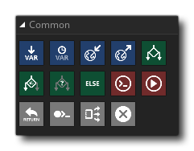

The Common action library is, as the name suggests, where you'll find the actions that will be used most often when creating your projects. These actions are generally used along with other actions and are all related to the functioning of the internal logic of the game. The available actions are all listed below: